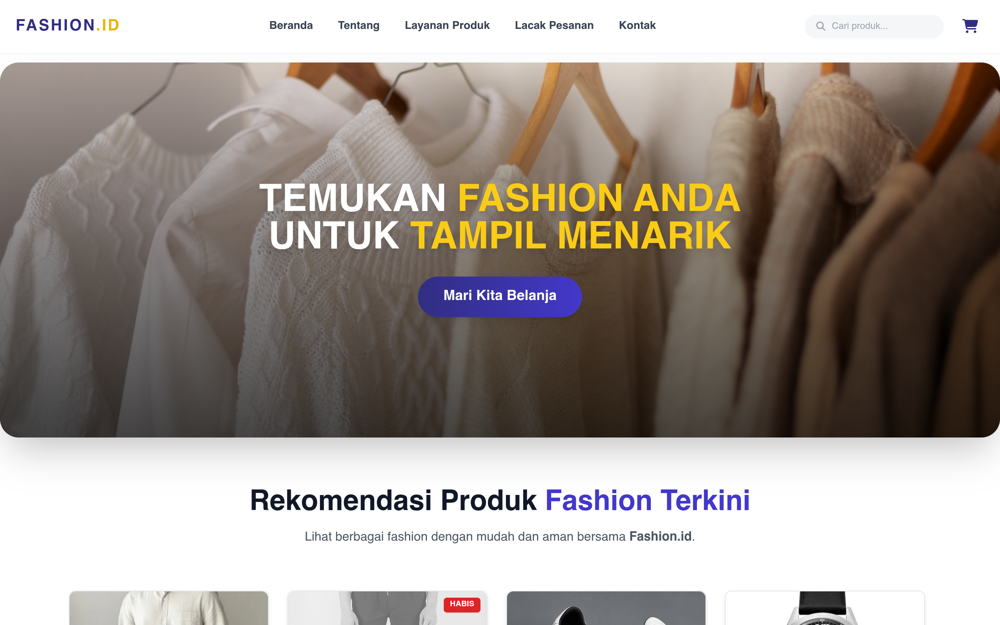
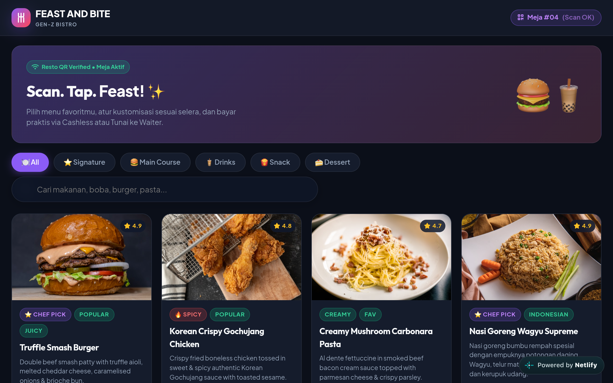

Tentang Saya
Bergelut di dunia digital saya berawal dari sejak menduduki sekolah SMP. lalu beralih ke dunia musik dan multimedia semenjak masuk SMA. dan lanjut ketingkat yang selanjutnya saya istiqomah memperdalam agama di tingkat kuliah ini. Bagi saya semua hal yang kupelajari itu belum apa adanya, banyak yang harus dikuasai didunia ini, apalagi semakin canggihnya teknologi masa kini.
Saat ini, saya sedang menempuh Pendidikan Ilmu Al-Qur'an dan Tafsir di Universitas Islam Negeri SMH Banten. sungguh kombinasi antara duniawi dengan religi.
5+
Tahun Pengalaman
Jam Terbang35+
Garapan Proyek
Selesai Tepat Waktu25+
Klien Puas
Kepuasan 100%Pengalaman Kerja & Organisasi
Rekam jejak pengalaman magang profesional dan kontribusi aktif di berbagai organisasi kemahasiswaan.
Pengalaman Kerja
Professional & Internship Experience
Magang di Kementerian Haji dan Umrah Kabupaten Lebak
Instansi Kementerian Haji & Umrah · Kab. Lebak
Selama liburan semester genap saya mengisi kekosongan waktu luang dengan mencari pengalaman magang di suatu Instansi Kementerian Haji dan Umrah Kabupaten Lebak untuk menambah relasi dan wawasan sekaligus pengalaman kerja secara mandiri.
Key Outcomes & Skills:
Pengalaman Organisasi
Leadership & Campus Organizations
Masa kuliah saya mengikuti beberapa organisasi kampus sebagai wadah pengembangan diri, kepemimpinan, dan jejaring sosial:
HMPS IAT UIN SMH Banten
Organisasi ProdiHimpunan Mahasiswa Program Studi Ilmu Al-Qur'an dan Tafsir
Aktif berkontribusi dalam perencanaan serta pelaksanaan kegiatan keorganisasian kemahasiswaan, pengembangan potensi akademik keilmuan Al-Qur'an, media visual, dan kepengurusan organisasi.
PMII Komisariat UIN SMH Banten
Organisasi PergerakanPergerakan Mahasiswa Islam Indonesia
Berperan aktif dalam forum pergerakan sosial kemahasiswaan, penguatan intelektual Islam kebangsaan, pembentukan karakter kepemimpinan yang kritis, serta jaringan silaturahmi kader.
KUMALA Komisariat UIN SMH Banten
Organisasi KedaerahanKeluarga Mahasiswa Lebak
Wadah kebersamaan dan kekeluargaan mahasiswa asal Kabupaten Lebak di UIN SMH Banten, berfokus pada pengabdian sosial masyarakat, persaudaraan daerah, serta kontribusi positif bagi memajukan daerah.
Sertifikat & Penghargaan
Dokumentasi sertifikasi kejuaraan, pengakuan akademik, dan apresiasi prestasi spiritual.

Juara 3 Bazar Ramadhan
Anniversary Badak Banten

Juara 2 Festival ATRAKSI
Univ. Latansa Mashiro

Kelulusan PBAK Kampus
UIN Sultan Maulana Hasanuddin Banten

Sertifikat Tahfizh 3 Juz
Penghargaan Hafalan Al-Qur'an

Sertifikat Tahfizh 5 Juz
Penghargaan Hafalan Al-Qur'an
Penguasaan Software
Perangkat lunak dan teknologi yang saya kuasai dalam eksekusi proyek kreatif dan digital.
VSCode
Code EditorFL Studio
Music ProductionPremiere Pro
Video EditingFigma
UI/UX & VectorPhotoshop
Raster & MatteAfter Effects
Motion GraphicsVSCode
Code EditorFL Studio
Music ProductionPremiere Pro
Video EditingFigma
UI/UX & VectorPhotoshop
Raster & MatteAfter Effects
Motion GraphicsAudio Mixing
Sound EngineeringFirebase
Backend & DBCanva
Creative LayoutLightroom
Color GradingCapCut
Short-Form VideoTailwind CSS
Styling FrameworkAudio Mixing
Sound EngineeringFirebase
Backend & DBCanva
Creative LayoutLightroom
Color GradingCapCut
Short-Form VideoTailwind CSS
Styling FrameworkGaleri Proyek
Proyek-proyek penguasaan software dan proyek client

Golden Rasio • Gunung Gede
Fotografi & Color grading
Genta Jaya Clothes Shop
Videografer dan Editor

GUGUR
Composser • PARANOISE
Kabinet ADHIKARYA
HMPS IAT UIN SMH Banten
KOMINFO
Layout Informatif & Feeds IG
Rapat Koordinasi Kesehatan Jemaah Haji
Dokumentasi Kegiatan & Feeds IG
Edukasi Haji
Serial Edukasi & Infografis Haji

WEBSITE FASHION.ID
E-Commerce & Interactive Store

WEBSITE OPERASIONAL F&B
Digital Menu, QR Order & Struk